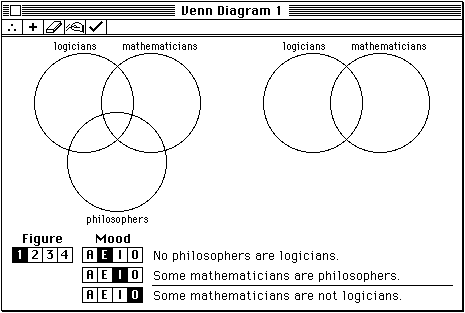
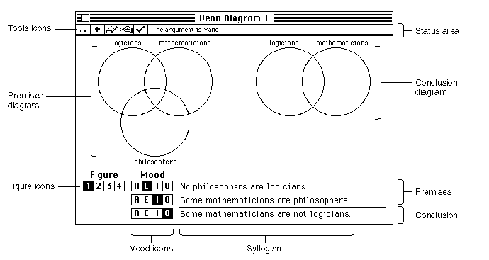
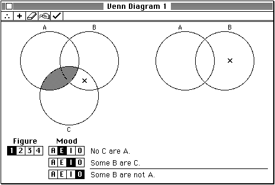
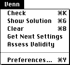

The Sample Application
The remainder of this book illustrates how to write a Macintosh application by gradually dissecting the source code of a very simple sample application, called Venn Diagrammer. This application allows the user to use Venn diagrams as a method of determining whether a given syllogism is valid (that is, whether the conclusion must be true if both premises are true). This section briefly describes the operation of the Venn Diagrammer application.When the user launches the Venn Diagrammer application, it opens a Venn diagram window, shown in Figure 1-9.
- IMPORTANT
- The account of syllogisms and Venn diagrams given here is inadequate for a full understanding of these topics. Most programmers, however, have encountered Venn diagrams at some point in their lives. For a more complete account, consult a good textbook on introductory logic.
Figure 1-9 A typical Venn diagram window

This window contains a number of distinct parts, shown in Figure 1-10.
Figure 1-10 The parts of a Venn diagram window

This window is designed to let the user select a syllogism and then assess the validity of the syllogism by appropriately modifying the Venn diagram (the five overlapping circles). The user graphs the information contained in the two premises in the three circles on the left and the information in the conclusion in the two circles on the right.
As you can see, a syllogism is an argument containing two premises and one conclusion. These three statements must each be of one of four specific forms, known as the statement's mood. The four moods are often designated by the letters A, E, I, and O, as follows:
A All philosophers are logicians. E No philosophers are logicians. I Some philosophers are logicians. O Some philosophers are not logicians. Syllogisms are further classified by figure, which determines the order of the terms in the two premises. A syllogism is completely determined by the three terms involved, the moods of the three statements, and the figure.
The user can graph the information in a syllogism by clicking in the overlapping regions in the circles. If a region is white, nothing is known about the region. If the region is shaded, it's known that there is nothing in that region (that is, the region is empty). Finally, if an X appears in the region, it's known that there is something in that region. A correctly graphed syllogism is shown in Figure 1-11.
Figure 1-11 A correctly constructed Venn diagram

At the top of the window, just below the title bar, are a set of tool icons and an empty status area. The tool icons allow the user to perform various operations on the diagram without having to move out of the window. For instance, clicking the tool in the middle (the eraser) clears the Venn diagram. These same operations can also be invoked using the Venn menu, as shown in Figure 1-12.

The Venn Diagrammer application displays information in the window's status area. For example, if the user clicks the leftmost tool icon (or chooses the Assess Validity menu command), the application determines whether the currently displayed syllogism is valid or invalid. If it's valid, the application displays the message "The argument is valid." in the status area; otherwise, it displays the message "The argument is invalid."